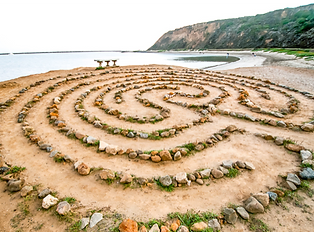

Ash Wednesday
Ash Wednesday marks the beginning of Lent, 40 days of prayer, contemplation, confession and penitence. Lent ends with the celebration of Easter and the Resurrection of Jesus Christ. This lesson will teach you about Ash Wednesday and delve into the contemplative prayer practice of walking the labyrinth — an ancient form of meditation.
Ash Wednesday

Scripture
